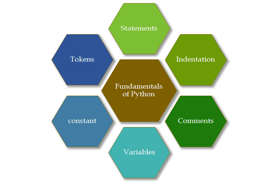
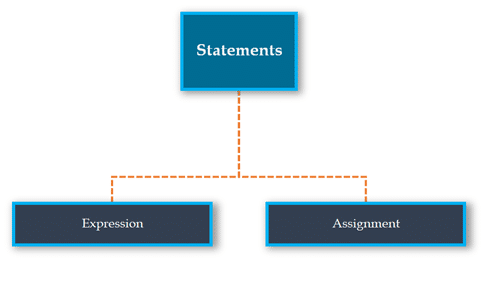
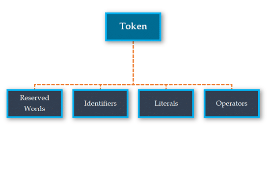
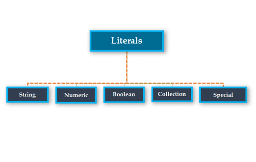

Fundamentals of Python consists of a discussion of basic building blocks of the Python programming language. Here, “Fundamentals of Python” is divided into the following categories. And we will be discussing each topic separately.
First and foremost, we will be discussing statements in Python.
Python statements are nothing but logical instructions that interpreters can read and execute. It can be both single and multiline.
There are two categories of statements in Python:

With the help of expressions, we perform operations like addition, subtraction, concentration etc.
In other words, it is a statement that returns a value.
it is an expression if it appears-
Note: An expression must have a return.
Example:
(1+5) * 3
18
pow (3,2)
9
With the help of assignment statements, we create new variables, assign values and also change values.
#LHS <=> RHS
variable = expression
We can categorize Assignment statements into three primary categories based on what’s on the Right-Hand Side of the statement.
In this case, Python allocates a new memory location to the newly assigned variable.
Let us take an example of this category.
test= "Hello World"
id(test)
Note:
Look at the example shown below:
test1="Hello"
id(test1)
output:
2524751071304
test2="Hello"
id(test2)
output:
2524751071304
As you might have noticed that we have assigned the same string to two different variables. But python allocated the same memory location for both the variables. That is because:
Python allocates the same memory location for the two cases mentioned below:
This concept used by Python to save memory is also called Interning.
In this case, Python doesn’t allocate a new memory location.
Let’s understand that with the help of an example:
current_var= "It's HumbleGumble" print(id(current_var)) new_var= current_var print(id(new_var)) 24751106240 2524751106240
As you can see we have the same location id allotted for the two variables.
In this category, we have an operation on the right side of the statement, which is the defining factor of the type of our statement.
Let’s understand that with the help of an example:
test= 7 * 2 type(test) int
test1= 7 * 2 / 10 type(test1) output: float
There are two ways to define multiline statements.
The end of a statement in python is considered as a newline character, to extend the statements over multiple lines we can use two methods.
e.g.
a = (0 + 1 + 2 +
3 + 4 + 5)
a = 0 + 1 + 2 + \
3 + 4 + 5
Comments are nothing but tagged lines of in codes which increases the readability of the code and make the code self-explanatory.Commentscan be of two categories:
With the help of one ‘#’, we begin a single-line comment
Example:
test= 7 * 2
type(test)
#Single-line comment
With the help of ‘‘‘… ’’,’ we write multiline comments in python.
Example:
test1= 7 * 2 / 10
type(test1)
'''
line one
line two
line three
'''
Python has the documentation strings (or docstrings) feature. It gives programmers an easy way of adding quick notes with every Python module, function, class, and method.
The strings defined using the triple-quotation mark are multiline comments. However, if such a string is placed immediately after a function or class definition or on top of a module, then they turn into docstrings.
Example:
def SayFunction():
'''
Strings written using '''_''' after a function represents docstring of func
Python docstrings are not comments
'''
print("just a docstring")
print("Let us see how to print the docstring value")
print(theFunction.__doc__)
A variable is a memory address that can change and when a memory address cannot change then it is known as constant. Variable is the name of the memory location where data is stored. Once a variable is stored then space is allocated in memory. It defines a variable using a combination of numbers, letters, and the underscore character.
There is no need for an explicit declaration to reserve memory. The assignment is done using the equal (=) operator. Some examples of legalpython variables> are –
i = 1
j = 2
You can assign a single value to the multiple variables as follows –
a=2
Also, we can assign multiple values to the multiple variables as follows –
a, b, c = 2, 25, ‘abc’
Note: Python is a type inferred language i.e. it automatically detects the type of assigned variable.
For instance,
test=1
type(test)
output:
int
test1="String"
type(test1)
output:
str
Constant is a type of variable that holds values, whose value cannot be changed. In reality, we rarely use constants in python.
#Declare constants in a separate file called constant.py
PI = 3.14
GRAVITY = 9.8
#inside main.py we import the constants
import constant
print(constant.PI)
print(constant.GRAVITY)
Tokens are the smallest unit of the program. There are the following tokens in Python:

Keywords are nothing but a set of special words, which are reserved by python and have specific meanings. Remember that we are not allowed to use keywords as variables in python.
Keywords in python are case sensitive.
We’ve just captured here a snapshot of the possible Python keywords.
help> keywords
Here is a list of the Python keywords. Enter any keyword to get more help.
False def if raise
None del import return
True elif in try
and else is while
as except lambda with
assert finally nonlocal yield
break for not
class from or continue global pass
Identifiers in python are nothing but user-defined names to represent programmable entities like variables, functions, classes, modules or any other objects.
But there are a few rules that we need to follow while defining an identifier. They are:
Using a large name (more than 79 chars) would lead to the violation of a rule set by the PEP-8 standard. It says.
The other built-in objects in python are Literals. Literals can be defined as data that is given in a variable or constant. Python has the following literals:

A string literal is a sequence of characters surrounded by quotes. We can use both single, double, or triple quotes for a string in Python. And, a character literal is a single character surrounded by single or double-quotes.
Numeric Literals are immutable (unchangeable). Numeric literals can belong to 3 different numerical types Integer, Float, and Complex.
A Boolean literal can have any of the two values: True or False.
There are four different literal collections List literals, Tuple literals, Dict literals, and Set literals.
Python contains one special literal i.e. None. We use it to specify that field that is not created.
Operators are the symbols that perform the operation on some values. These values are known as operands.
In Python, operators are categorized into the following categories:
| Arithmetic Operators | Operator Name | Description | Example |
| + | Addition | Perform Addition | I=40, J=20 >>>I+ J >>>60 |
| – | Subtraction | Perform Subtraction | I=40, J=20 >>>I – J >>>20 |
| * | Multiplication | Perform Multiplication | I=40, J=20 >>>I * J >>> 800 |
| / | Division | Perform Division | I=30, J=20 >>>I /J >>> 2.5 |
| % | Modulus | Return the remainder after Division | I=40, J=20 >>>I /J >>> 0 |
| ** | Exponent | Performs exponential (power) calculation | I=4, J=20 >>>I /J >>> 204 |
| // | Floor Division | Perform division remove the decimal value and return Quotient value | I=30, J=20 >>>I//J >>> 1 |
It is also known as the comparison operator because it compares the values. After comparison, it returns the Boolean value i.e. either true or false.
| Operator | Operator Name | Description | Example |
| == | Equal to | If the values of two operands are equal, then then it returns true. | I = 20, J = 20 (I == J) is True |
| != | Not Equal to | If the values of two operands are not equal, then it returns true. | I = 20, J = 20 (I == J) is False |
| < | Less than | If the value of the left operand is less than the value of the right operand, then it returns true | I = 40, J = 20 (I < J) is False |
| > | Greater than | If the value of the left operand is greater than the value of the right operand, then it returns true | I= 40, J = 20 (I > J) is True |
| <= | Less than or equal to | If the value of the left operand is less than or equal to the value of the right operand, then it returns true | I = 40, J = 20 (I <= J) is False |
| >= | Greater than or equal to | If the value of the left operand is greater than or equal to the value of the right operand, then it returns true. | I = 40, J = 20 (I >= J) is True |
| <> | Not equal to (similar to !=) | If the values of two operands are not equal, then the condition becomes true | I=40, J = 20 (I <> J) is True. |
| Operator | Operator Name | Description | Example |
| = | Assignment | It assigns a value from right side operand to left side operand | I = 40 It assigns 40 to I |
| += | Add then assign | It performs addition and then results is assigned to the left-hand operand | I+=J that means I = I + J |
| -= | Subtract then assign | It performs subtraction and then results is assigned to the left-hand operand | I-=J that means I = I – J |
| *= | Multiply the assign | It performs multiplication and then the results are assigned to the left-hand operand. | I*=J that means I = I * J |
| /= | Divide then assign | It performs division and then results is assigned to the left-hand operand | I/=J that means I = I / J |
| %= | Modulus then assign | It performs modulus and then results is assigned to the left-hand operand | I%=J that means I = I % J |
| **= | Exponent then assign | It performs exponent and then results is assigned to the left-hand operand | I**=J that means I = I ** J |
| //= | The floor division then assign | It performs floor division and then results is assigned to the left-hand operand | I//=J that means I = I // J |
| Operator | Operator Name | Description | Example |
| and | Logical AND | When Both side condition is true the result is true otherwise false | 2<1 and 2<3 False |
| or | Logical OR | When at least one condition is true then the result is true otherwise false | 2<1 or 2<3 True |
| not | Logical NOT | Reverse the condition | Not (5>4) False |
| Operator | Description | Example |
| in | It returns true if it finds a variable in the sequence otherwise returns false | List = [1,2,3,4,5,6,7,8] i=1 if i in List: print(‘i is available in list’) else: print(‘i is not available in list’) Output – i is available in list |
| not in | It returns true if it does not find a variable in the sequence otherwise returns false | List = [1,2,3,4,5,6,7,8] j=10 if j not in List: print (‘j is not available in list’) else: print (‘j is available in list’) Output – j is not available in list |
It performs bit by bit operation.
Suppose there are two variables,
I = 10 and
J = 20
and their binary values are:
I = 10 = 0000 1010
J = 20 = 0001 0100
now let us see how bitwise operators perform.
| Operator | Operator Name | Description | Example |
| & | Binary AND | If both bits are 1 then 1 otherwise 0 | I & J 0000 0000 |
| | | Binary OR | If one of the bits is 1 then 1 otherwise 0 | I | J 0001 1110 |
| ^ | Binary XOR | If both bits are same, then 0 otherwise 1 | I ^ J 0001 1110 |
| ~ | Binary Complement | If bit is 1 the make it 0 and if bit is 0 the make it 1 | ~I 1111 0101 |
| << | Binary Left Shift | The left operand is moved left by the number of bits specified by the right operand. | I << 2 240 i.e. 1111 0000 |
| >> | Binary Right Shift | The left operand is moved right by the number of bits specified by the right operand. | I >> 2 15 i.e. 1111 |
These operators are used to compare the memory address of two objects.
| Operator | Description | Example |
| is | It returns true if both operand‘s identity is same otherwise false | I = 20 J = 20 if(I is J): print (‘I and J have the same identity) else: print (‘I and J have not same identity’) Output – I and J have same identity |
| is not | It returns true if both operand‘s identity is not the same otherwise false | I = 20 J = 230 if(I is not J): print (‘I and J have not same identity’) else: print (‘I and J have the same identity) Output – I and J have not same identity |